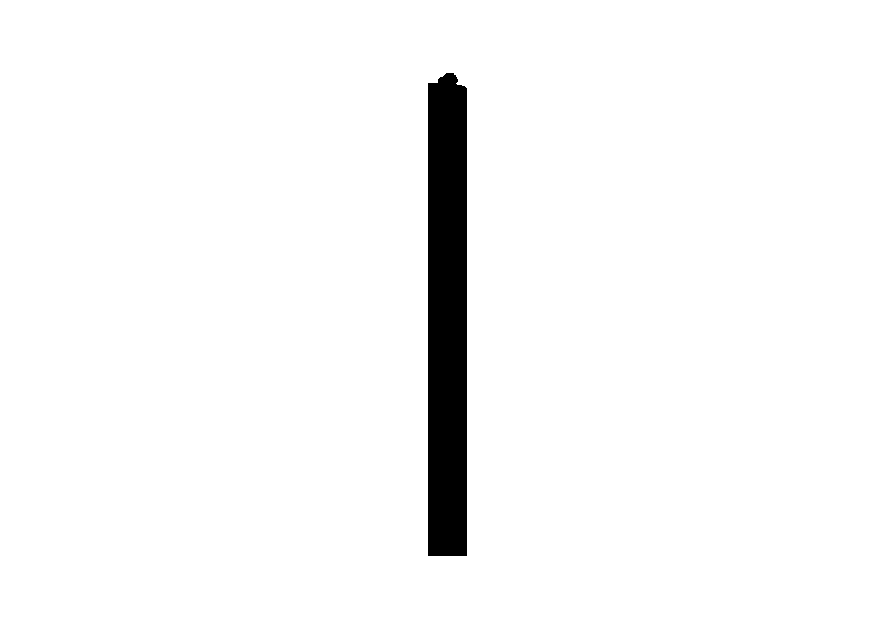

FishEye Knowldge Graph: Identify Temporal Patterns of individual entities and between entities
VAST Chaellenge 2023: Mini-Challenge 2
(First Published: May 28, 2023)
Load all relevant packages
import data
Extract the nodes info from mc2 data frame
id -- Name of the company that originated (or received) the shipment
shpcountry -- Country the company most often associated with when shipping
rcvcountry -- Country the company most often associated with when receiving
read
We will store mc2_nodes in rds format for ease of subsequent retrieval. This code need only be executed once and henece. Thereafter we will reload the mc2_nodes dataframe again
Extract the edges info from mc2 data frame
arrivaldate -- Date the shipment arrived at port in YYYY-MM-DD format.
hscode -- Harmonized System code for the shipment. Can be joined with the hscodes table to get additional details.
valueofgoods_omu -- Customs-declared value of the total shipment, in Oceanus Monetary Units (OMU)
volumeteu -- The volume of the shipment in ‘Twenty-foot equivalent units’, roughly how many 20-foot standard containers would be required. (Actual number of containers may have been different as there are 20ft and 40ft standard containers and tankers that do not use containers)
weightkg -- The weight of the shipment in kilograms (if known)
Also store the mc2_edge info in native rds format.
Aggregate the weight information between each pair of notes and by the relationship type
Get summary stats on the edge data frame
source target arrivaldate hscode
Length:5464378 Length:5464378 Min. :2028-01-01 Length:5464378
Class :character Class :character 1st Qu.:2029-09-11 Class :character
Mode :character Mode :character Median :2031-04-30 Mode :character
Mean :2031-05-31
3rd Qu.:2033-02-25
Max. :2034-12-30
valueofgoods_omu volumeteu weightkg valueofgoodsusd
Min. : 1100 Min. : 0.0 Min. : 0 Min. :0.000e+00
1st Qu.: 148130 1st Qu.: 0.0 1st Qu.: 3060 1st Qu.:2.682e+04
Median : 504485 Median : 0.0 Median : 10300 Median :7.204e+04
Mean : 1665142 Mean : 1.5 Mean : 37266 Mean :8.654e+05
3rd Qu.: 1202560 3rd Qu.: 0.0 3rd Qu.: 19730 3rd Qu.:1.580e+05
Max. :44744530 Max. :1215.0 Max. :495492485 Max. :2.258e+11
NA's :5464097 NA's :520933 NA's :3017844 Understand the unique values for HS code
Aggregate the weight information between each pair of notes and by the date
We use tbl_graph() of tinygraph package to build an tidygraph’s network graph data.frame.
Plot a graph for “Náutica del Norte Kga Holding”
Show the code

test graph
# A tibble: 5,464,378 × 8
source target arrivaldate hscode valueofgoods_omu volumeteu weightkg
<chr> <chr> <date> <chr> <dbl> <dbl> <int>
1 AquaDelight In… Barin… 2034-02-12 630630 141015 0 4780
2 AquaDelight In… Barin… 2034-03-13 630630 141015 0 6125
3 AquaDelight In… -15045 2028-02-07 470710 NA 0 10855
4 AquaDelight In… -15045 2028-02-23 470710 NA 0 11250
5 AquaDelight In… -15045 2028-09-11 470710 NA 0 11165
6 AquaDelight In… -15045 2028-10-09 470710 NA 0 11290
7 AquaDelight In… Océan… 2028-04-12 304890 NA 0 9000
8 AquaDelight In… Olas … 2028-06-04 304890 NA 0 19490
9 AquaDelight In… Shou … 2028-09-03 303890 NA 0 6865
10 AquaDelight In… Shou … 2028-09-08 306170 NA 0 19065
# ℹ 5,464,368 more rows
# ℹ 1 more variable: valueofgoodsusd <dbl>References
Harshita Kanodia (June 2022), IUU Fishing in the Indian Ocean: A Security Threat. Diplomatist, https://diplomatist.com/2022/06/09/lets-catch-the-big-fish/